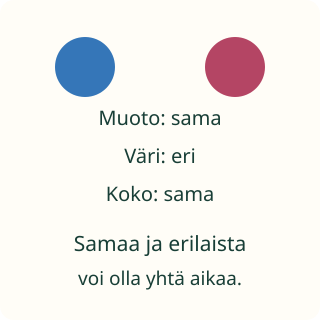

Loikan tarkka katse

Loikka löysi kaksi retkilappua. Niissä on jotakin samaa ja jotakin erilaista. Mitä huomaat?
Tavoite: huomaan yhtäläisyyksiä ja eroja.
Loikka löysi kaksi retkilappua. Niissä on jotakin samaa ja jotakin erilaista. Mitä huomaat?
Tavoite: huomaan yhtäläisyyksiä ja eroja.
Ota kaksi tavaraa vierekkäin. Katso niiden muotoa, sitten väriä ja kokoa. Voit näyttää sormella, mitä tarkoitat.

Kuvan laput ovat yhtä suuria ja pyöreitä. Väri on eri. Siis muoto on sama ja väri on eri. Yksi ero ei pyyhi pois yhtäläisyyksiä.
Kaksi sukkaa voi olla samanvärisiä, vaikka toinen on isompi. Väri on sama, koko on eri. Sano myös, mitä ominaisuutta vertaat.
Ennusta: jos vain väri vaihdetaan, muuttuuko myös muoto?
Katso tätä paria. Valitse joka riville sama tai eri. Piste näyttää valintasi. Kokoa verratessa katsomme tässä lapun korkeutta. Kuvioiden nimet saa lukea tai kuulla aikuiselta.
Pari 1: vasen lappu on sininen, sen reuna on kaareva ja korkeus 56 kuvayksikköä. Oikea lappu on punainen, sen reuna on kaareva ja korkeus 56 kuvayksikköä.
Voit muuttaa jokaista valintaa.
Peitä muut vertailurivit paperilla. Katso ensin vain muotoa. Sama vai eri? Siirry sitten seuraavaan ominaisuuteen.
Etsi esinepari, jossa on ainakin yksi sama ja yksi eri asia. Vanhempi oppija voi verrata myös käyttötarkoitusta tai materiaalia. Kerro, mitä kuvasta ei voi tietää.
Graafin luokka-alue on 1–6; lyhyt aloitus sopii ensimmäisille luokille. Muotojen muodollisia nimiä tai kirjoittamista ei vaadita. Sama/eri tulkitaan aina ominaisuuden suhteen. Näyttö tarkistaa vain kuvatun muodon, värin ja koon vertailurivit. Se ei arvioi avoimia havaintoja, kosketusaistia tai yleistä ajattelukykyä.
Ilman laitetta: verratkaa kahta paperilappua tai sukkaa. Hyväksy useat oikeat havainnot. Pyydä perustelu osoittamalla tai kertomalla. Täysin samanlaisista näkökuvista voi silti löytyä muita eroja oikeassa maailmassa.
Lopuksi: voiko kahdessa esineessä olla sama väri mutta eri koko?